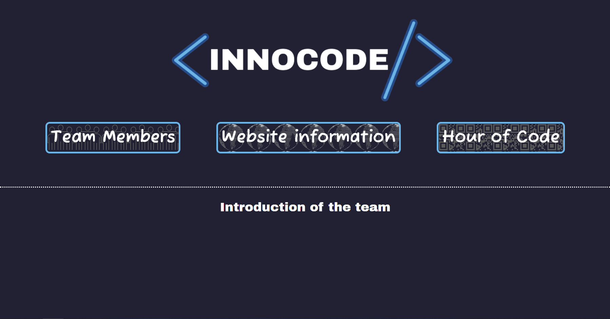
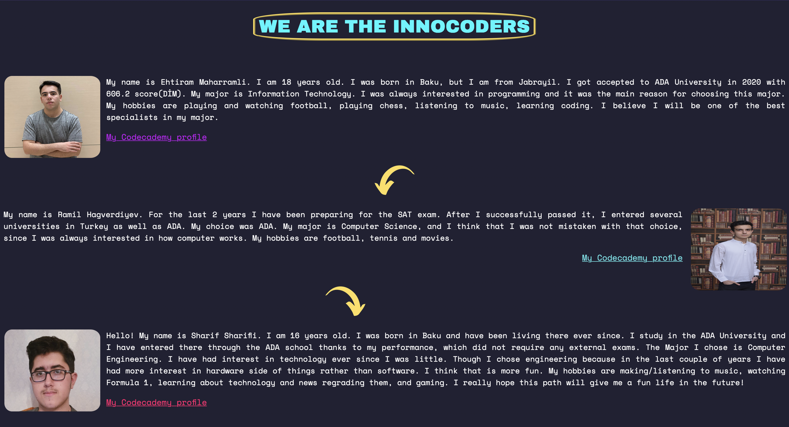
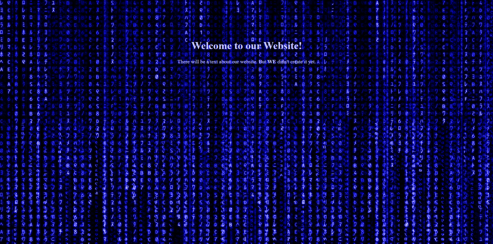
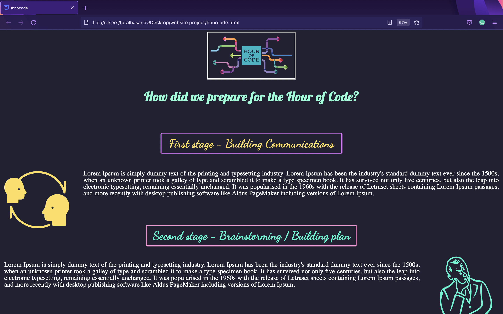

Information About Our WebPages
First of all, we decided to create our main page, the main page for us is the "Introduction" page. On this page we have information about us, about our page, as well as links to pages. Here we used HTML and CSS to color our page and add links to our other pages. This page is mainly needed to present our team. This page was prepared by Ehtiram Maharramli.
Next on the list of our pages, is the "Team Members" page where we were able to collect information about each of us. Here we described the interests of each of us, our hobbies, as well as how we entered ADA university. Here you can get acquainted with each of our participants. The information was initially collected in our chat, and then this page was prepared by Tural Hasanov.
The "Website Information" page is actually the page where you are now. On the "Website Information" page, you can see each of our pages, as well as find out how and by whom it was created. The "Website Information" page was created by Ramil Hagverdiyev. This page has been checked on some devices in case it displays correctly.
Last but not least is the "Hour of Code" page. On that page, we described how we prepared and continue to prepare for the Hour of Code event. On the "Hour of Code" page you can find out in detail how you got together for the meetings and prepared for them. This page was produced by Tural Hasanov as well as Team members page.
